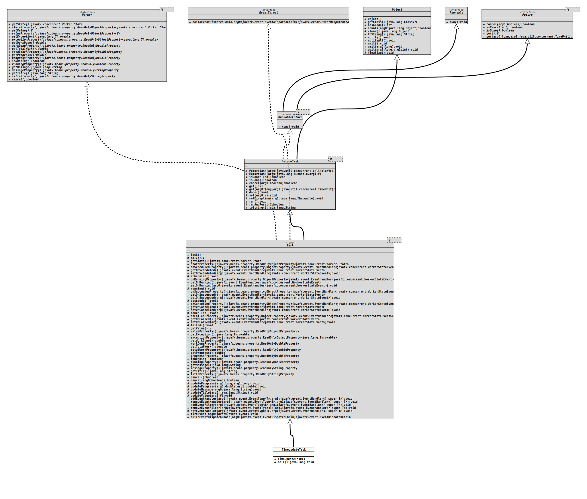

Module org.tquadrat.shootingtimer
Package org.tquadrat.shootingtimer
Class TimeUpdateService.TimeUpdateTask
- All Implemented Interfaces:
Runnable,Future<Void>,RunnableFuture<Void>,Worker<Void>,EventTarget
- Enclosing class:
- TimeUpdateService
@ClassVersion(sourceVersion="$Id: Action.java 944 2021-12-21 21:56:24Z tquadrat $")
@API(status=INTERNAL,
since="0.1.0")
private class TimeUpdateService.TimeUpdateTask
extends Task<Void>
The task that will update the time display.
- Author:
- Thomas Thrien (thomas.thrien@tquadrat.org)
- Version:
- $Id: Action.java 944 2021-12-21 21:56:24Z tquadrat $
- Since:
- 0.1.0
- UML Diagram
-

UML Diagram for "org.tquadrat.shootingtimer.TimeUpdateService.TimeUpdateTask"
{kind=link}
-
Property Summary
Properties inherited from class javafx.concurrent.Task
exception, message, onCancelled, onFailed, onRunning, onScheduled, onSucceeded, progress, running, state, title, totalWork, value, workDone -
Nested Class Summary
Nested classes/interfaces inherited from interface javafx.concurrent.Worker
Worker.State -
Constructor Summary
Constructors -
Method Summary
Methods inherited from class javafx.concurrent.Task
addEventFilter, addEventHandler, buildEventDispatchChain, cancel, cancel, cancelled, exceptionProperty, failed, fireEvent, getException, getMessage, getOnCancelled, getOnFailed, getOnRunning, getOnScheduled, getOnSucceeded, getProgress, getState, getTitle, getTotalWork, getValue, getWorkDone, isRunning, messageProperty, onCancelledProperty, onFailedProperty, onRunningProperty, onScheduledProperty, onSucceededProperty, progressProperty, removeEventFilter, removeEventHandler, running, runningProperty, scheduled, setEventHandler, setOnCancelled, setOnFailed, setOnRunning, setOnScheduled, setOnSucceeded, stateProperty, succeeded, titleProperty, totalWorkProperty, updateMessage, updateProgress, updateProgress, updateTitle, updateValue, valueProperty, workDonePropertyMethods inherited from class java.util.concurrent.FutureTask
done, get, get, isCancelled, isDone, run, runAndReset, set, setException, toString
-
Constructor Details
-
TimeUpdateTask
public TimeUpdateTask()Creates a newTimeUpdateTaskinstance.
-
-
Method Details